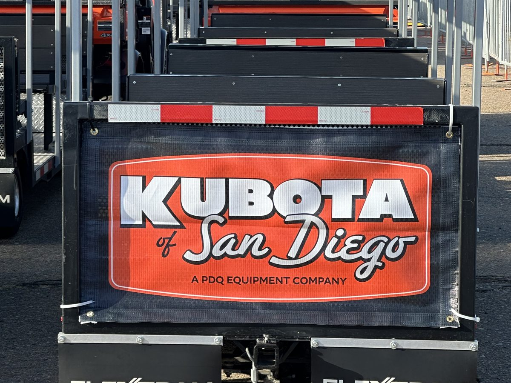

Sponsorship's untapped frontier.
Why transit is the most captive audience at your event.
Sponsorship is, at its core, an attention economy. Brands pay for access to eyeballs — specifically, relevant eyeballs that are engaged, present, and receptive. And yet one of the most reliably captive audiences at any large event goes almost entirely unmonetized.
They are sitting still, they cannot leave, and they have nothing to do but look around. They are your passengers.
The geometry of captivity
There is a meaningful difference between an audience that can look away and one that cannot. A fan walking past a banner can ignore it. A fan scrolling through an app can skip the ad. But a passenger in a vehicle is in a fundamentally different position. They are physically present, temporally committed, and — in the absence of other stimulation — genuinely receptive to what's around them.
This is not a new insight. The out-of-home advertising industry has understood for decades that transit environments produce unusually high engagement. Subway cars, airport shuttles, and ride-share vehicles all command attention that static signage cannot. The dwell time is measured, the audience is defined, and the context — movement toward a destination — creates a receptive psychological state.
Event transit is that same environment, but with one significant upgrade: the audience is already self-selected. They are not random commuters. They are fans of a specific team, attendees of a specific concert, guests of a specific venue. The demographic targeting that digital advertising promises but rarely perfectly delivers is, in event transit, simply a function of showing up.
What sponsors are actually buying
When a brand sponsors a FlexTram vehicle or stop, they are not buying an impression in the conventional sense. They are buying something considerably more valuable: a moment of undivided, contextually relevant attention from a pre-qualified audience.
Consider what that looks like in practice. A beverage brand wraps a tram running between the parking area and the stadium entrance. Every patron who boards that tram — already in an anticipatory, celebratory frame of mind — is immersed in that brand for the duration of the ride. There is no scroll, no skip, no second screen. There is just the brand, the passenger, and a few minutes of shared space.
Now multiply that across a full event day, across multiple vehicles, across a season of events. The cumulative impression count is significant. But more importantly, the quality of those impressions — contextually matched, physically immersive, temporally contained — is well above what most sponsorship inventory can offer.
The demographic targeting that digital advertising promises but rarely perfectly delivers is, in event transit, simply a function of showing up.
The stop as an activation platform
The vehicles themselves are only part of the opportunity. Tram stops — the fixed points where patrons wait and board — are an equally compelling sponsorship canvas, and in some ways a more flexible one.
A branded stop can do more than display a logo. It can house a sampling activation, a digital engagement mechanic, a QR-driven promotion, or a staffed brand experience. Patrons waiting for a vehicle are in exactly the right state for a brief, well-designed brand interaction: they're stationary, they're not rushing, and they're already in a positive frame of mind about the event ahead.
We've seen sponsors use stop activations to drive app downloads, product trials, social sharing, and loyalty sign-ups — all in the two to four minutes a patron spends waiting for their ride. That's a remarkably efficient use of sponsorship budget for the engagement rates it produces.
Integrating transit into the sponsorship menu
For venue and event sponsorship teams, the practical question is how to package and sell transit inventory alongside existing offerings. The good news is that it integrates naturally.
Transit sponsorship works well as a standalone buy for brands that want a specific, contained audience experience. It also works as a premium add-on within a larger sponsorship package — a way to offer top-tier partners something genuinely differentiated in a market where naming rights and signage are increasingly commoditized.
Pricing can be structured around vehicle wraps, stop branding, dwell-time activations, or a combination. Because the audience size and dwell time are measurable — unlike many traditional sponsorship placements — transit inventory can be sold with a level of accountability that sponsors increasingly demand.
A cost offset that changes the conversation. For event operators, branded transit doesn't just generate revenue — it offsets the cost of running the system in the first place. In several of our deployments, sponsorship revenue has covered a significant portion of operational costs, effectively making the transportation system close to cost-neutral.
That changes the internal conversation entirely. Transportation stops being a budget line to be minimized and becomes a sponsored amenity — something the event provides, the patron appreciates, and the brand funds. Everyone wins.
The audience has always been there. The vehicles are now there too. The only thing missing is the brand that's smart enough to claim the space first.
— The FlexTram Team
Common questions
Why is event transit such a valuable sponsorship opportunity?
Passengers in a vehicle are physically present, temporally committed, and genuinely receptive. Unlike banners or digital ads, there is no scroll, no skip, and no second screen. The audience is also pre-qualified — they are fans of a specific team, attendees of a specific concert, or guests of a specific venue.
How does transit sponsorship compare to traditional event sponsorship?
Transit sponsorship offers contextually matched, physically immersive, temporally contained impressions that are well above what most traditional sponsorship inventory can offer. The audience size and dwell time are measurable, giving sponsors a level of accountability that naming rights and signage often cannot provide.
What can sponsors do at tram stops?
Branded tram stops can house sampling activations, digital engagement mechanics, QR-driven promotions, or staffed brand experiences. Patrons waiting for a vehicle are stationary, not rushing, and in a positive frame of mind — ideal conditions for brand interaction.
Can transit sponsorship offset transportation operating costs?
Yes. In several deployments, sponsorship revenue has covered a significant portion of operational costs, effectively making the transportation system close to cost-neutral. This changes transportation from a budget line to a sponsored amenity.
How is transit sponsorship inventory packaged and sold?
Transit sponsorship works as a standalone buy or a premium add-on within a larger sponsorship package. Pricing can be structured around vehicle wraps, stop branding, dwell-time activations, or a combination — with measurable audience size and dwell time.
Keep reading
Ready to monetize your transit?
FlexTram offers rentals, long-term leases, and turnkey transportation plans — with sponsorship integration built in.